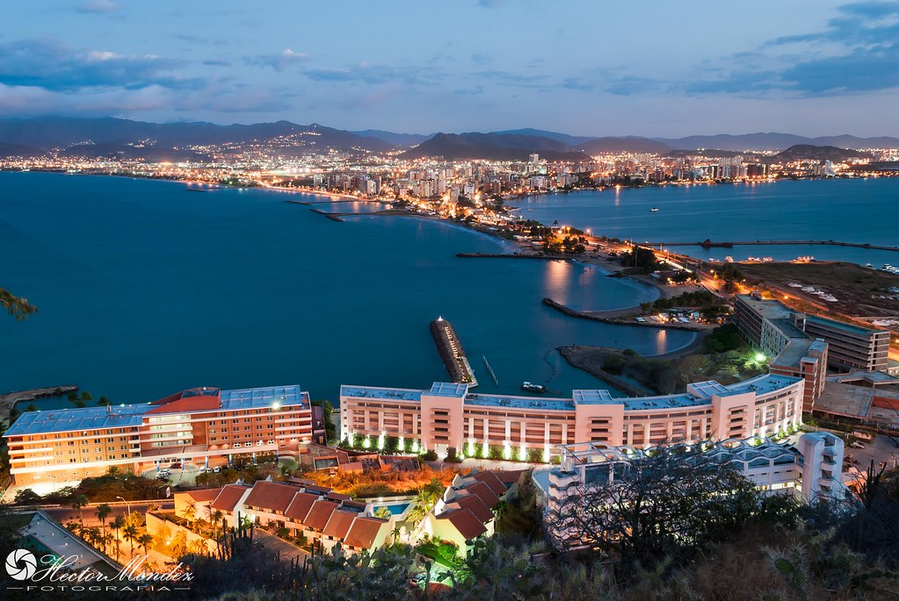
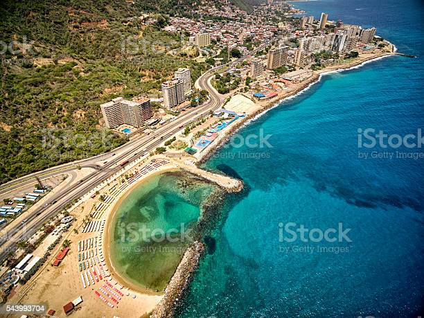

Lugares para turisticos

Lecheria
Lechería é uma cidade venezuelana, capital do Município Diego Bautista Urbaneja. Localizada ao norte do estado de Anzoátegui na Venezuela, tem uma população de 36.450 habitantes, distribuídos em 12 km², Lechería é o menor município da Venezuela e um dos mais ricos do país.

La Guaira
La Guaira é a capital do estado de La Guaira, Venezuela. Está localizado no centro-norte da Venezuela, a 30 km da cidade de Caracas, capital do país caribenho.

Puerto la Cruz
Puerto La Cruz, fundada como Puerto de la Santa Cruz, é uma cidade venezuelana localizada no estado de Anzoátegui. É a capital do município de Sotillo. Em 2017 tinha uma população de 300.231 habitantes.